Antes
Mil abas. Nenhuma resposta.
Antes
O briefing mudava no meio da produção.
Antes
E o status real estava no WhatsApp. Às 23h.
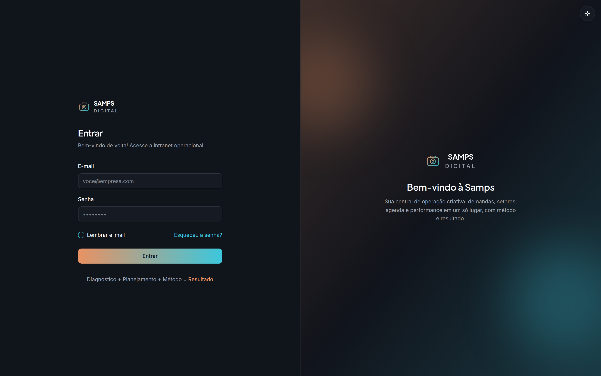
Um acesso · o cargo decide o que abre
Desde 2026 com a Samps
Samps OS
O sistema operacional da agência.
Diagnóstico + Planejamento + Método = Resultado
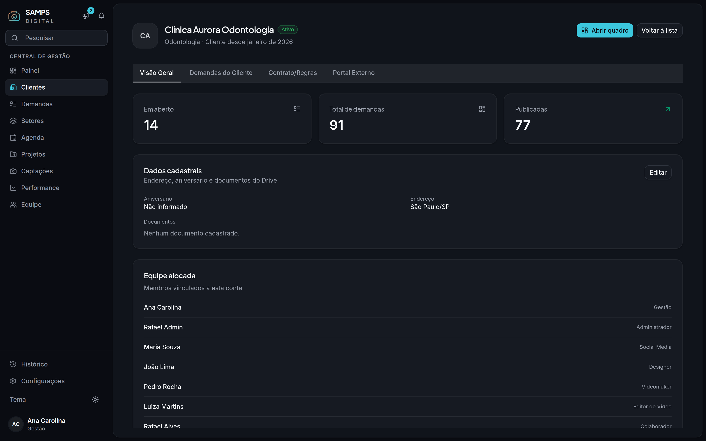
01 · Contrato
O contrato gera a demanda.
Cada cliente com escopo, equipe alocada e histórico no mesmo lugar.
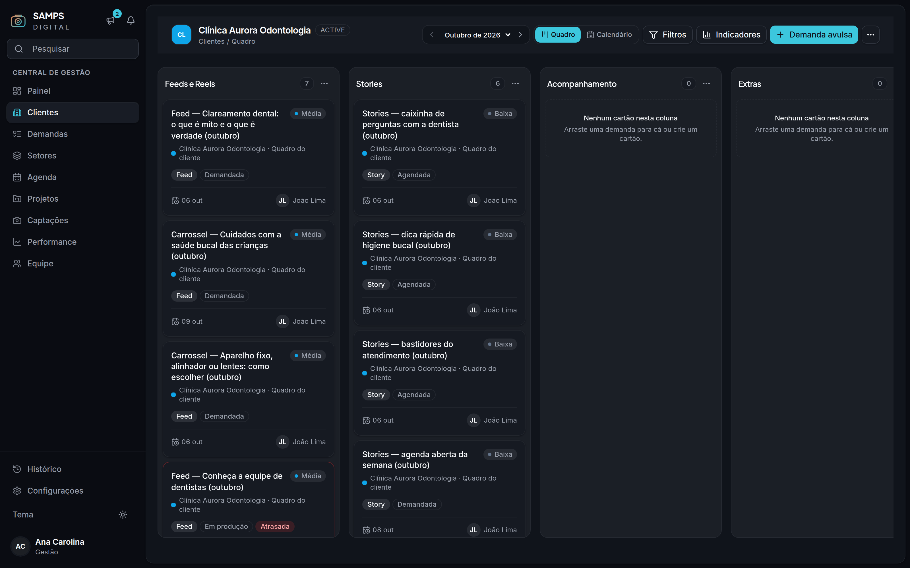
02 · Quadro
Um quadro por cliente. Nada se perde no meio.
Colunas livres para o time; o status real continua sendo o do ciclo da demanda.
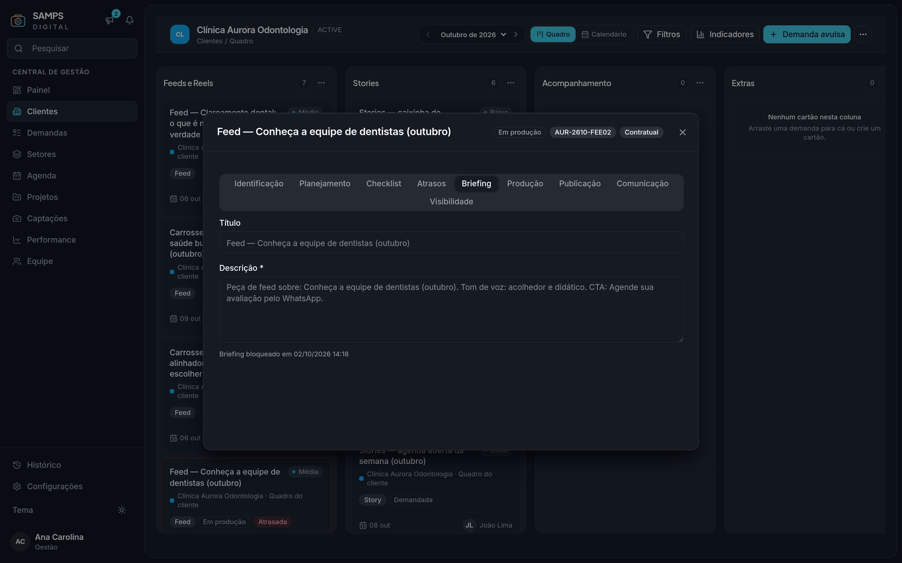
03 · Briefing
O briefing trava quando é concluído.
“Briefing bloqueado em 02/10/2026 14:18” — ninguém muda o combinado no meio.
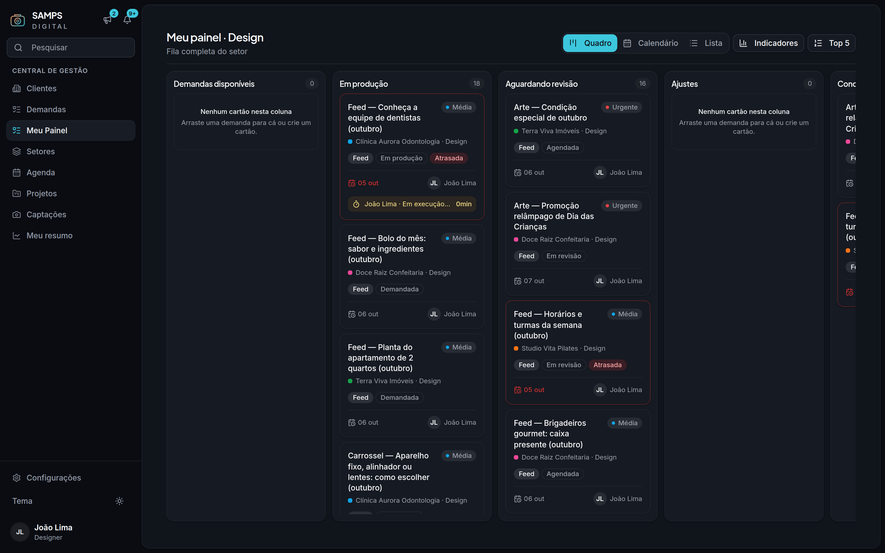
04 · Produção
A produção é medida, não estimada.
Cronômetro por demanda, dentro da fila do setor.
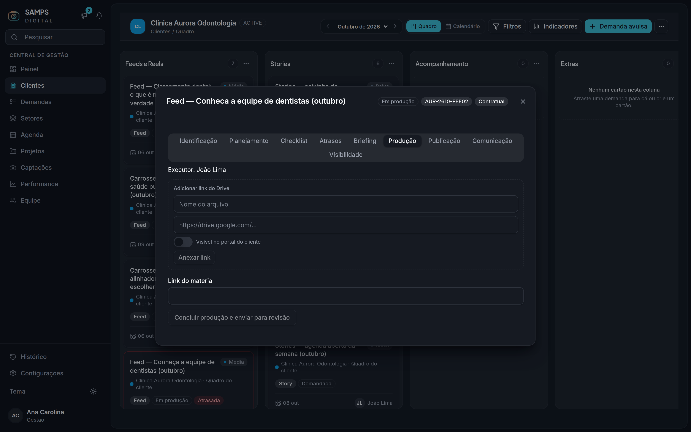
05 · Entrega
Link do Drive na própria demanda.
E é aqui que o time decide o que o cliente vê.
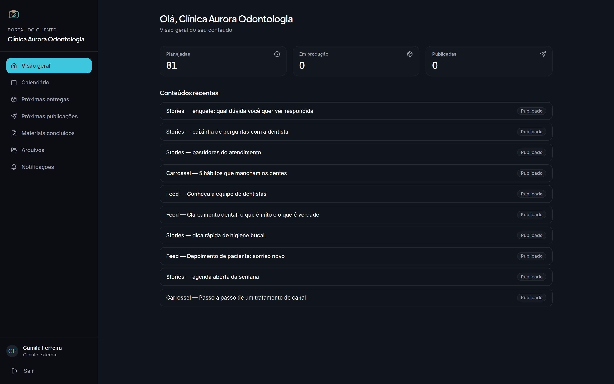
06 · Portal
O cliente vê só o que foi liberado.
Vitrine controlada: nada de mural, cronômetro ou ruído interno.
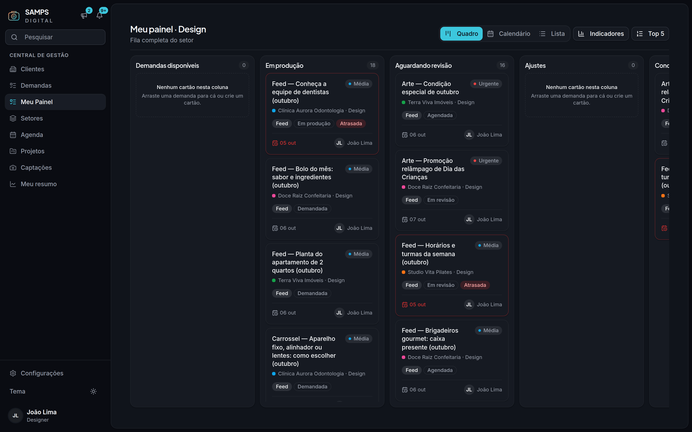
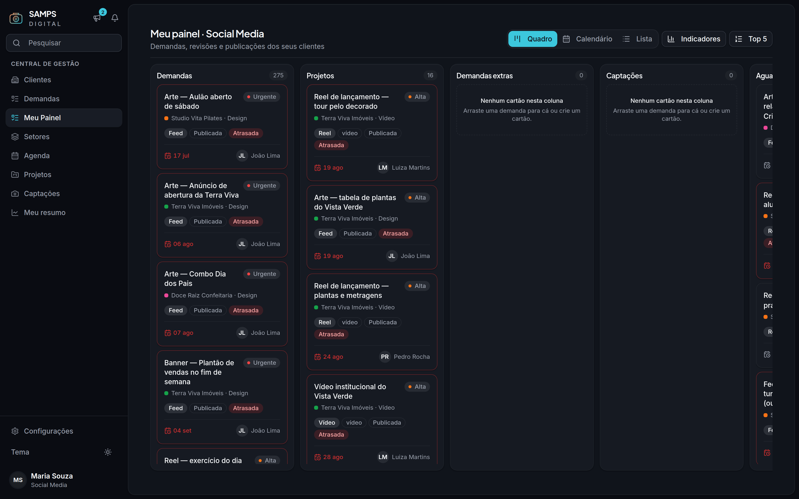
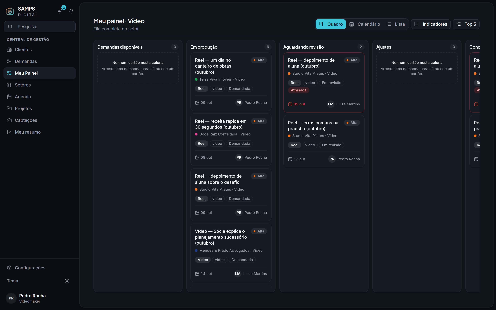
07 · Setores
Cada setor com a sua fila.
Social, Design e Vídeo: Meu Painel abre no cargo de quem entrou.
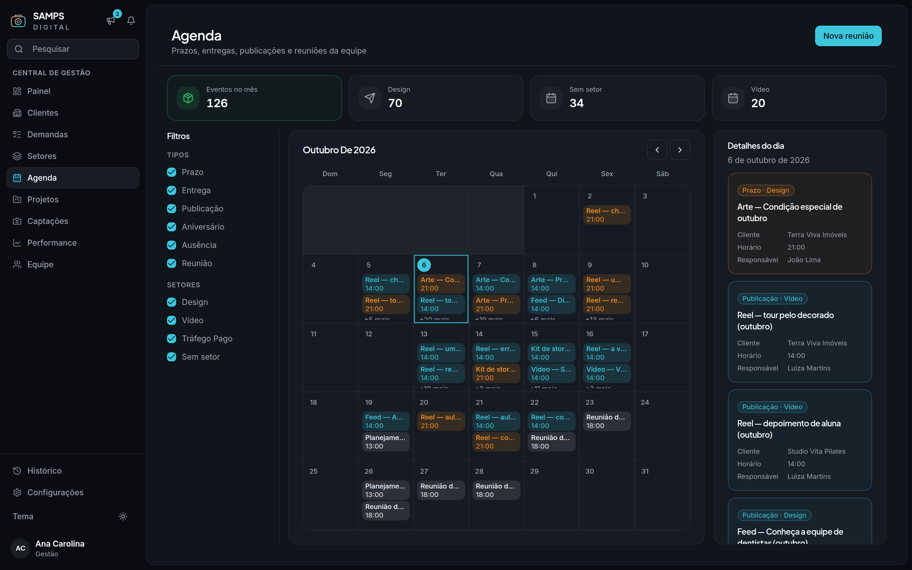
08 · Agenda
Prazo, entrega, publicação e reunião no mesmo mês.
126 eventos em outubro, filtrados por tipo e por setor.
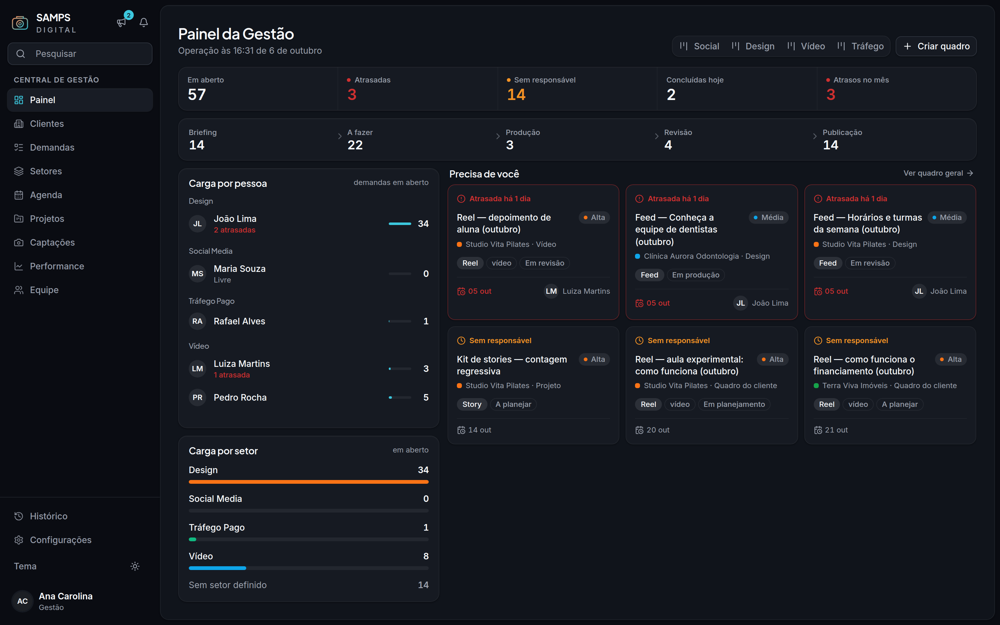
09 · Gestão
Ver sem perguntar.
57 em aberto · 3 atrasadas · 14 sem responsável · carga por pessoa e por setor.
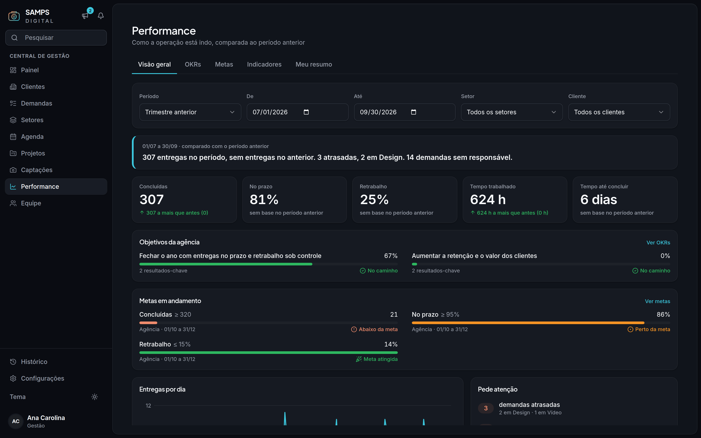
10 · Performance
Um trimestre medido pelo próprio sistema.
307 entregas · 81% no prazo · 624 h trabalhadas — números da simulação de trimestre.
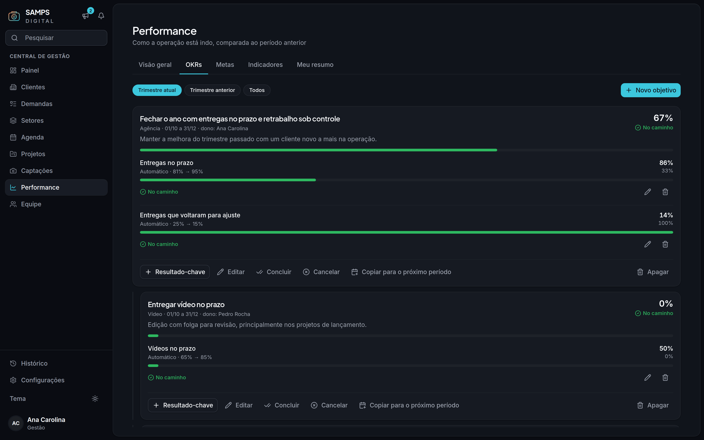
11 · Metas e OKRs
Metas e OKRs que se atualizam sozinhos.
“Entregas no prazo — automático, 81% → 95%.” Sem planilha paralela.

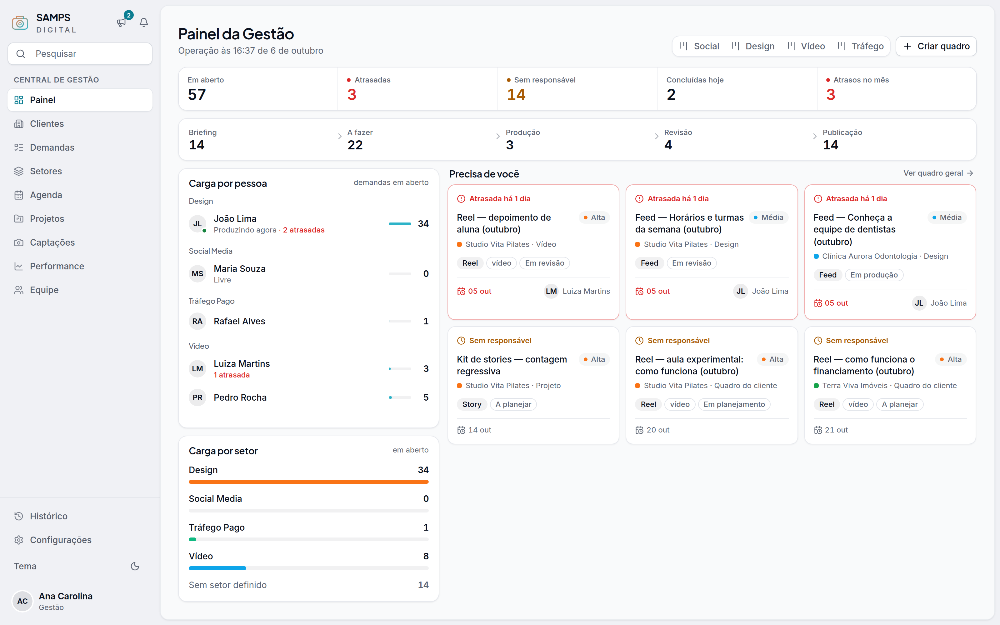
12 · Identidade
Claro ou escuro. A mesma marca.
Teal, ciano e brasa da Samps — densidade de ferramenta de mesa.
Do contrato à publicação,
em um só lugar.
Samps OS · o sistema operacional da Samps Digital
Agora, ao vivo.
Trilha: “The Builder”, Kevin MacLeod (incompetech.com) · CC BY 4.0